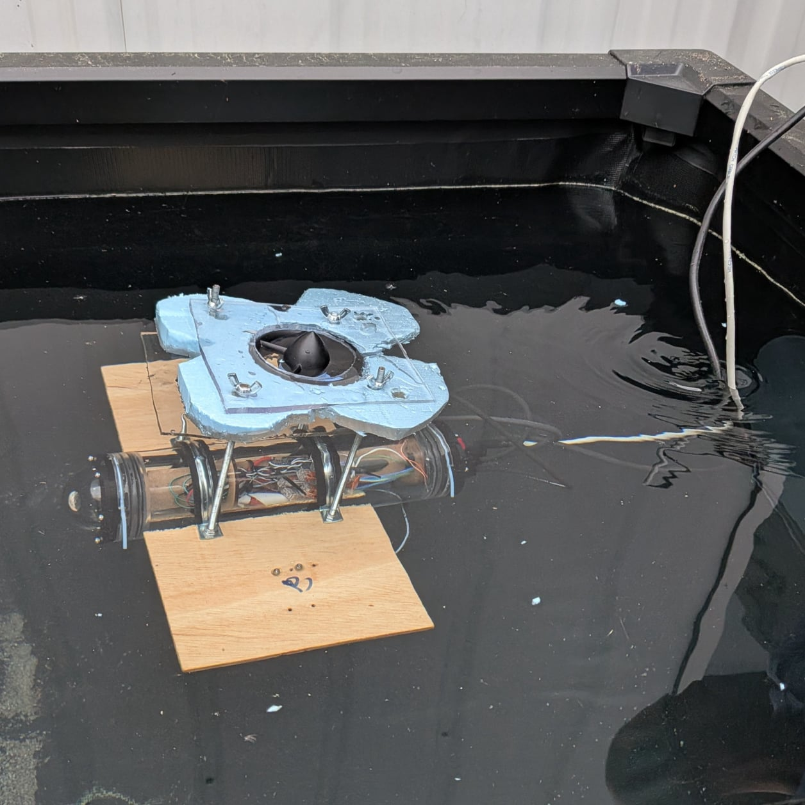
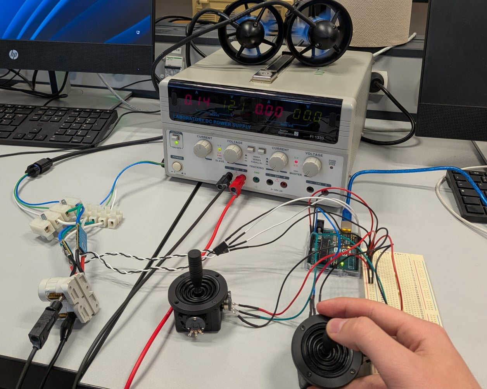
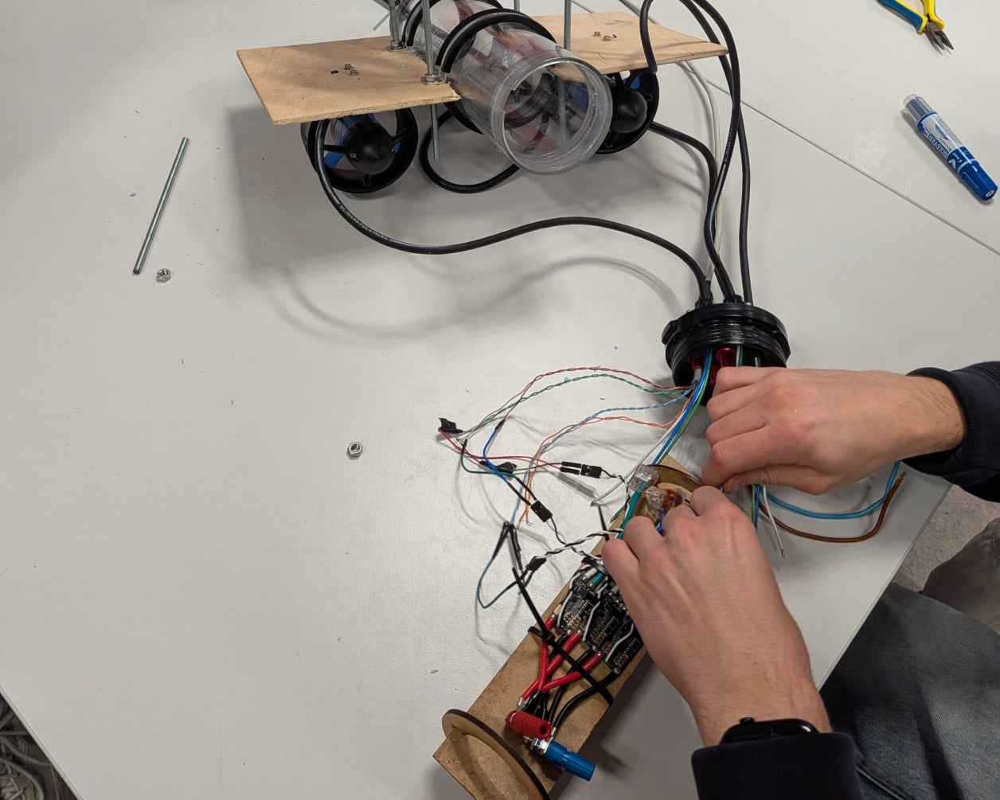
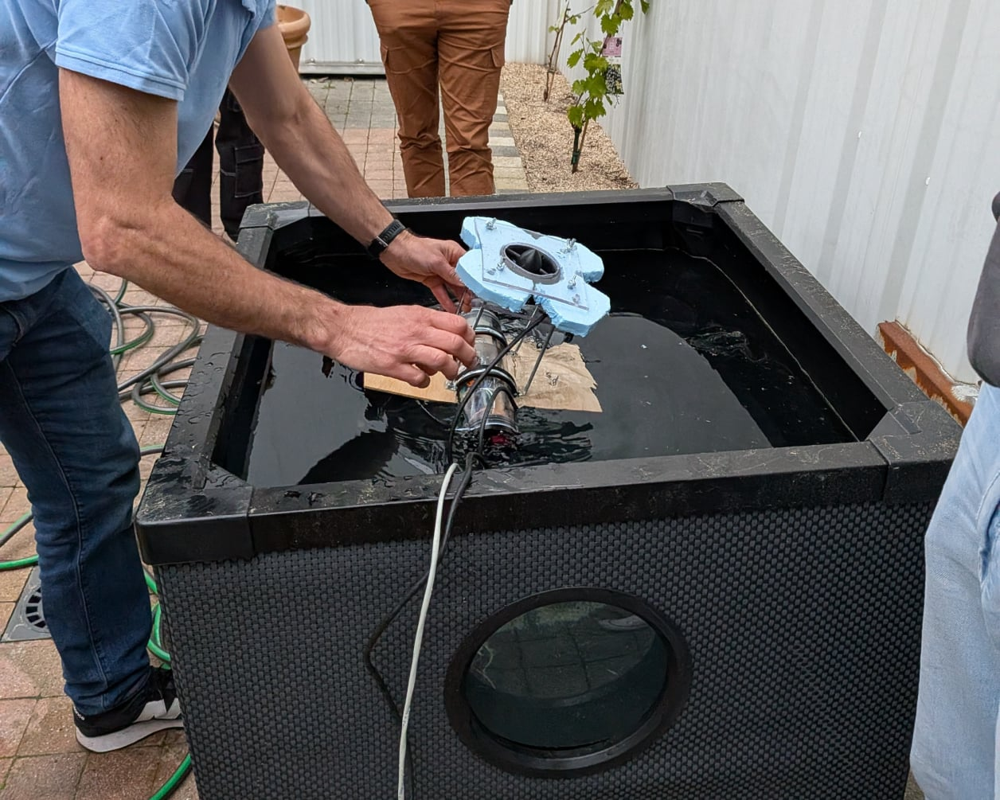
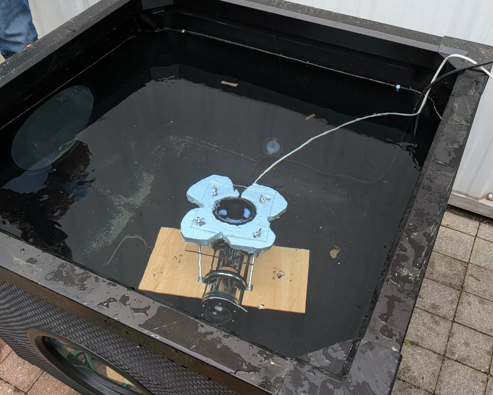

Offline Website BuilderDrone filaire commandé par joystick

Drone sous-marin
Le projet consiste en la conception simplifiée d'un drone sous-marin. L'objectif principal de ce projet est de créer un appareil télécommandé à l'aide d'un joystick, capable de se déplacer selon trois axes : avancer/reculer, tourner à droite/à gauche et monter/descendre. Pour la transmission du signal sous l'eau, un câble Ethernet est utilisé, et le corps du drone est constitué d'un tube rigide en plexiglas résistant à la pression.
Ma contribution
Ce projet a été réalisé par une équipe de 4. Les tâches étaient réparties selon les domaines de conception du drone sous-marin : la conception mécanique, la conception électronique et la conception informatique.
Pour ma part, j’ai participé aux tâches suivantes :
- Conception et rédaction du code informatique
- Assemblage du drone et implantation du code
- Test et vérification du fonctionnement
Comment ça fonctionne ?
Système d'acquisition :
Le drone est télécommandé via deux joysticks JH-D202X-R4. Un joystick gère les deux propulseurs latéraux pour l'avancement et la rotation, tandis que l'autre contrôle le propulseur vertical pour la plongée et la remontée. La transmission du signal se fait par un câble Ethernet. Les joysticks utilisent le principe du diviseur de tension (potentiomètre), convertissant le mouvement en une variation de tension (2.5V au neutre, 0V ou 5V aux extrémités).
Traitement :
Une carte Arduino UNO R3 est le cerveau du système. Elle récupère les signaux analogiques des joysticks via ses broches de conversion analogique numérique (ADC) (A0, A1, A2).
Le programme se divise en deux blocs : l'acquisition et la mise à l'échelle des tensions, puis le calcul des signaux de contrôle pour les moteurs. Les signaux bruts sont lus avec la fonction analogRead(), et mappés à une plage de -400 à 400. Un seuil de zone morte (seuil = 10) est appliqué pour ignorer le bruit et assurer l'arrêt des moteurs au neutre, avec une calibration du point zéro au démarrage pour corriger les défauts du potentiomètre.
Action et Contrôle :
Trois propulseurs étanches sont utilisés pour déplacer le drone.
Des drivers Blue Robotics ESC, contrôlés par signaux de modulation de longueurs d'impulsion (PWM), pilotent les moteurs. Ces drivers sont connectés aux broches PWM (3, 5, 6) de l'Arduino. Il permettent de fournir la puissance nécessaire aux propulseurs à partir des signaux d’entrées.
La fonction (poussee()) calcule la puissance de poussée (lpow, rpow, tpow) pour chaque moteur en combinant les valeurs des axes X, Y et Z. La puissance est transmise aux drivers via la fonction writeMicroseconds(), avec des valeurs bornées entre 1100 et 1900 microsecondes pour des raisons de sécurité et de standardisation du signal indiqué dans les datasheets des propulseurs.
Le calcul des puissances pour les propulseurs latéraux fut plus compliqué que prévu. Lors des premiers prototypages rapides notre code s’est rapidement montré dysfonctionnel. Certaines zones de fonctionnement n'étaient pas correctes car nous avions initialement calculé les axes avancer et tourner séparément. Après plusieurs recherches nous avons déterminé qu’il fallait calculer les deux axes l’un par rapport à l’autre en utilisant la formule y - x. Nous avons donc entièrement refait nos calculs en inversant la poussée dans les valeurs négatives pour un fonctionnement normal.
Vous pouvez trouver ci-dessous le code régissant notre prototype:
Code informatique
Ici ce trouve les dossier de conception du projet:
Dossier de Conception




Offline Website Builder
Compétences développées
Concevoir
Voir la compétence
Vérifier
Voir la compétence
Installer
Voir la compétence